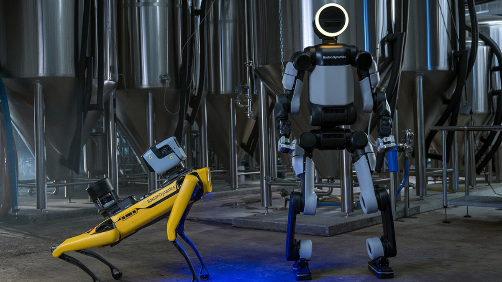

17 ноября Boston Dynamics и GlobalFoundries официально объявили о расширении сотрудничества. GlobalFoundries станет первым полупроводниковым производителем, который испытает гуманоида Atlas в программе раннего внедрения. Испытания начнутся в начале 2027 года на площадках компании. Это первая подобная программа в мире полупроводникового производства и первый выход Atlas за пределы автомобильной отрасли Hyundai, где робот проходил испытания до сих пор.
Повод для доверия серьёзный: GlobalFoundries четвёртый год использует четвероногих Spot на площадке в Бёрлингтоне (штат Вермонт). В Сингапуре два Spot с апреля прошли почти 900 километров и выполнили более 90 000 проверок в технических зонах фабрики с 99% успешных миссий. Всего за две недели компания перевела на Spot 875 рутинных инспекций и планирует в ближайшее время удвоить это число. Роботы будут развёрнуты на фабриках в Малте (Нью-Йорк), Бёрлингтоне, Дрездене и Сингапуре.
Задачи гуманоида формулируются трезво: оценить возможные сценарии применения, готовность площадки и требования к интеграции — посмотреть, какие операции в полуоткрытых и опасных зонах фабрики вообще поддаются автономизации, и начать раннее обучение под конкретные задачи. В GlobalFoundries называют шаг логичным: переход от реактивного к предиктивному обслуживанию, «физический ИИ» рядом с обычным. Обещания «Atlas заменит персонал» нет ни в одном предложении — речь о тестах и сборе данных для будущей автоматизации.
Полупроводниковая фабрика — одно из самых враждебных к человеку производственных мест: химия, вибрации, режим чистоты, ночные смены. Если первыми туда идут гуманоиды, а не склады и магазины, — это хороший индикатор, к каким сценариям технология готова в первую очередь. Для Boston Dynamics это и первый названный клиент Atlas вне автомобильной отрасли: спустя неделю после ноябрьского анонса «Atlas на колёсах» программа, судя по всему, ускоряется.